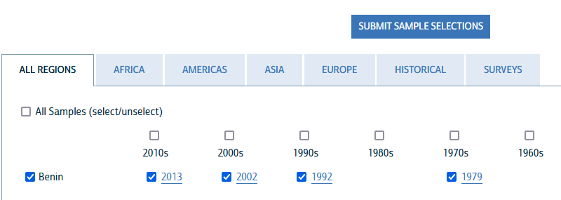
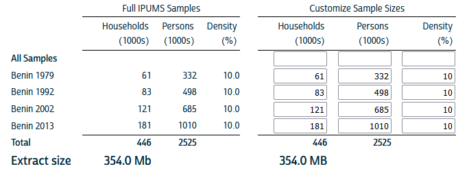

7 Préparation des données
La méthode d’acquisitio des données est la même que celle qui a été décrite pour la comparaison des derniers recensements de cinq pays d’Afrique de l’Ouest mais la liste des variables est différente puisque l’objectif est ici d’analyser les mobilités des individus. Il est important de préciser pour chaque variable les définitions exactes et les métadonnées fournies par IPUMS concernant les procédures d’harmonisation entre les dates
7.1 Sélection des dates
En cliquant sur le bouton “SELECT SAMPLES” on va tout d’abord choisir les recensements qui nous intéressent. On peut en retenir soit un seul soit plusieurs à la fois. Ici, nous avons retenu les quatre recensements du Bénin disponibles sur IPUMS.

7.2 Sélection des variables
Nous avons effectué une sélection ciblée de variables en privilégiant celles qui concernent les individus et sont disponibles pour les quatre dates.
| Type | Variable | Label |
|---|---|---|
| H | COUNTRY | Country |
| H | YEAR | Year |
| H | SAMPLE | IPUMS sample identifier |
| H | SERIAL | Household serial number |
| H | HHWT | Household weight |
| H | URBAN | Urban-rural status |
| H | GEOLEV1 | 1st subnational geographic level, world [consistent boundaries over time] |
| H | GEOLEV2 | 2nd subnational geographic level, world [consistent boundaries over time] |
| H | ELECTRIC | Electricity |
| H | WATSUP | Water supply |
| P | PERNUM | Person number |
| P | PERWT | Person weight |
| P | RESIDENT | Residence status: de facto, de jure |
| P | RELATE (general) | Relationship to household head [general version] |
| P | RELATED (detailed) | Relationship to household head [detailed version] |
| P | AGE | Age |
| P | AGE2 | Age, grouped into intervals |
| P | SEX | Sex |
| P | MARST (general) | Marital status [general version] |
| P | MARSTD (detailed) | Marital status [detailed version] |
| P | BIRTHYR | Year of birth |
| P | CITIZEN | Citizenship |
| P | BPLBJ1 | Department of birth, Benin |
| P | BPLBJ2 | Commune of birth, Benin |
| P | EDATTAIN (general) | Educational attainment, international recode [general version] |
| P | EDATTAIND (detailed) | Educational attainment, international recode [detailed version] |
| P | YRSCHOOL | Years of schooling |
| P | EDUCBJ | Educational attainment, Benin |
| P | EMPSTAT (general) | Activity status (employment status) [general version] |
| P | EMPSTATD (detailed) | Activity status (employment status) [detailed version] |
| P | LABFORCE | Labor force participation |
| P | MIGRATEP | Migration status, previous residence |
| P | MIGCTRYP | Country of previous residence |
| P | GEOMIG1_P | 1st subnational geographic level of previous residence, world [consistent boundaries over time] |
| P | MIGYRS1 | Years residing in current locality |
| P | MIG1_P_BJ | Department of previous residence, Benin; consistent boundaries, GIS |
| P | MIG2_P_BJ | Commune of previous residence, Benin; consistent boundaries, GIS |
7.3 Choix du niveau d’échantillonage
Nous avons utilisé le niveau maximal d’échantillonage proposé soit 10% des individus à chaque date de recensement. Cela correspond évidememnt à des effectifs différents compte-tenu de la croissance démographique rapide du pays au cours de la période d’observation. On passe de 332000 individus en 1979 à plus d’un million en 2013 soit un triplement. On aurait pu décider d’utiliser un échantillon de même taille à chacune des dates mais nous avons préféré retenir l’effectif maximal à chaque date, sachant que cela implique des différences de précision dans les mesures.

7.4 Récupération des fichiers
Pour pouvoir charger ensuite les données dans R ou un autre logiciel, nous avons besoin comme d’habitude de deux fichiers qui pourront être partagés entre les étudiants et les formateurs si l’on obtient le statut de classroom pour l’école d’été.
- le fichier ipums00019.DAT qui contient les données au format compressé .gz
- le fichier ipums00019.DDI qui contient les métadonnées au format .xml
Pour importer les données dans R, il faut installer le package ipumsr qui va nous permettre de lire les métadonnées puis d’importer les données en une seule opération.
library(ipumsr)
# Importation de l'échantillon à 10%
ddi <- read_ipums_ddi("ipums/rp/ipumsi_00019.xml")
data <- read_ipums_micro(ddi)
saveRDS(data,"ipums/rp/rp_benin_4dates_samp10pct.RDS")7.5 Conversion de format dans R
Nous reviendrons ultérieurement sur le format du tableau R obtenu qui n’est pas un data.frame standard car il comporte des labels supplémentaire donnant à la fois le nom des variables et le code de leurs modalités. On retiendra juste ici que les données initialement de type haven_labelled peuvent être converties en type factor à l’aide du package haven ce qui permet de visualiser plus facilement.
A titre d’exemple, le petit programme ci-dessous convertit l’ensemble des données en factor et affiche les premières lignes.
library(haven)
# Lit le fichier enregistré
rp<-readRDS("ipums/rp/rp_benin_4dates_samp10pct.RDS")
# Convertit les variables haven_labelled en factors
rp<-as_factor(rp, only_labelled=T)
class(rp)[1] "tbl_df" "tbl" "data.frame"# Convertit le tableau en pur data.frame
rp<-as.data.frame(rp)
class(rp)[1] "data.frame"# Affiche les 10 premières lignes (soit 2 ménages de 5 personnes )
kable(head(rp,10), caption = "Extrait des données IPUMS International sur le Bénin")| COUNTRY | YEAR | SAMPLE | SERIAL | HHWT | URBAN | GEOLEV1 | GEOLEV2 | ELECTRIC | WATSUP | PERNUM | PERWT | RESIDENT | RELATE | RELATED | AGE | AGE2 | SEX | MARST | MARSTD | BIRTHYR | CITIZEN | BPLBJ1 | BPLBJ2 | EDATTAIN | EDATTAIND | YRSCHOOL | EDUCBJ | EMPSTAT | EMPSTATD | LABFORCE | MIGRATEP | MIGCTRYP | GEOMIG1_P | MIGYRS1 | MIG1_P_BJ | MIG2_P_BJ |
|---|---|---|---|---|---|---|---|---|---|---|---|---|---|---|---|---|---|---|---|---|---|---|---|---|---|---|---|---|---|---|---|---|---|---|---|---|
| Benin | 1979 | Benin 1979 | 1000 | 10 | NA | 204001 | 204001001 | No | No piped water | 1 | 10 | NA | Head | Head | 38 | 35 to 39 | Male | Married/in union | Married, polygamous | NA | Citizen, not specified | Alibori | Banikorara | Less than primary completed | No schooling | None or pre-school | None | Employed | Employed, not specified | Yes, in the labor force | Same major, same minor administrative unit | NA | Alibori [Department: Benin] | 15 | Alibori | Banikorara |
| Benin | 1979 | Benin 1979 | 1000 | 10 | NA | 204001 | 204001001 | No | No piped water | 2 | 10 | NA | Spouse/partner | Spouse/partner | 30 | 30 to 34 | Female | Married/in union | Married, monogamous | NA | Citizen, not specified | Alibori | Banikorara | Less than primary completed | No schooling | None or pre-school | None | Inactive | Housework | No, not in the labor force | Same major, same minor administrative unit | NA | Alibori [Department: Benin] | 15 | Alibori | Banikorara |
| Benin | 1979 | Benin 1979 | 1000 | 10 | NA | 204001 | 204001001 | No | No piped water | 3 | 10 | NA | Child | Child | 3 | 0 to 4 | Female | Single/never married | Single/never married | NA | Citizen, not specified | Alibori | Banikorara | NIU (not in universe) | NIU (not in universe) | NIU (not in universe) | NIU (not in universe) | NIU (not in universe) | NIU (not in universe) | NIU (not in universe) | Same major, same minor administrative unit | NA | Alibori [Department: Benin] | 3 | Alibori | Banikorara |
| Benin | 1979 | Benin 1979 | 1000 | 10 | NA | 204001 | 204001001 | No | No piped water | 4 | 10 | NA | Child | Child | 9 | 5 to 9 | Female | Single/never married | Single/never married | NA | Citizen, not specified | Alibori | Banikorara | Less than primary completed | No schooling | None or pre-school | None | NIU (not in universe) | NIU (not in universe) | NIU (not in universe) | Same major, same minor administrative unit | NA | Alibori [Department: Benin] | 5 | Alibori | Banikorara |
| Benin | 1979 | Benin 1979 | 1000 | 10 | NA | 204001 | 204001001 | No | No piped water | 5 | 10 | NA | Spouse/partner | Spouse/partner | 33 | 30 to 34 | Female | Married/in union | Married, monogamous | NA | Citizen, not specified | Alibori | Banikorara | Less than primary completed | No schooling | None or pre-school | None | Inactive | Housework | No, not in the labor force | Same major, same minor administrative unit | NA | Alibori [Department: Benin] | 15 | Alibori | Banikorara |
| Benin | 1979 | Benin 1979 | 1000 | 10 | NA | 204001 | 204001001 | No | No piped water | 6 | 10 | NA | Child | Child | 3 | 0 to 4 | Male | Single/never married | Single/never married | NA | Citizen, not specified | Alibori | Banikorara | NIU (not in universe) | NIU (not in universe) | NIU (not in universe) | NIU (not in universe) | NIU (not in universe) | NIU (not in universe) | NIU (not in universe) | Same major, same minor administrative unit | NA | Alibori [Department: Benin] | 3 | Alibori | Banikorara |
| Benin | 1979 | Benin 1979 | 1000 | 10 | NA | 204001 | 204001001 | No | No piped water | 7 | 10 | NA | Child | Child | 6 | 5 to 9 | Male | Single/never married | Single/never married | NA | Citizen, not specified | Alibori | Banikorara | Less than primary completed | No schooling | None or pre-school | None | NIU (not in universe) | NIU (not in universe) | NIU (not in universe) | Same major, same minor administrative unit | NA | Alibori [Department: Benin] | 5 | Alibori | Banikorara |
| Benin | 1979 | Benin 1979 | 1000 | 10 | NA | 204001 | 204001001 | No | No piped water | 8 | 10 | NA | Child | Child | 9 | 5 to 9 | Male | Single/never married | Single/never married | NA | Citizen, not specified | Alibori | Banikorara | Less than primary completed | No schooling | None or pre-school | None | NIU (not in universe) | NIU (not in universe) | NIU (not in universe) | Same major, same minor administrative unit | NA | Alibori [Department: Benin] | 5 | Alibori | Banikorara |
| Benin | 1979 | Benin 1979 | 1000 | 10 | NA | 204001 | 204001001 | No | No piped water | 9 | 10 | NA | Child | Child | 12 | 10 to 14 | Male | Single/never married | Single/never married | NA | Citizen, not specified | Alibori | Banikorara | Less than primary completed | No schooling | None or pre-school | None | Employed | Employed, not specified | NIU (not in universe) | Same major, same minor administrative unit | NA | Alibori [Department: Benin] | 10 | Alibori | Banikorara |
| Benin | 1979 | Benin 1979 | 1000 | 10 | NA | 204001 | 204001001 | No | No piped water | 10 | 10 | NA | Child | Child | 15 | 15 to 19 | Female | Single/never married | Single/never married | NA | Citizen, not specified | Alibori | Banikorara | Less than primary completed | No schooling | None or pre-school | None | Employed | Employed, not specified | Yes, in the labor force | Same major, same minor administrative unit | NA | Alibori [Department: Benin] | 15 | Alibori | Banikorara |